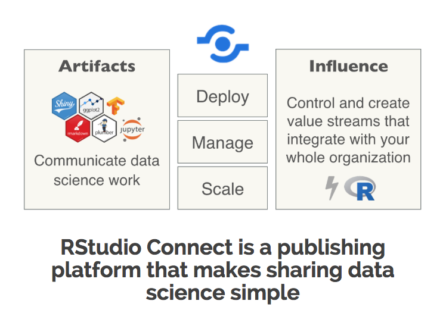

Chapter 6 Deployment
6.1 RStudio Connect
It doesn’t matter how great your analysis is unless you can explain it to others: you need to communicate your results. - Grolemund & Wickham in R For Data Science

RStudio Connect
6.1.0.1 Workshop Exercise: Inital Deployment
First: Login to RStudio Connect
Discussion:
Pre-deployment Brainstorm
- What is our goal in deploying this code?
- What does our code depend on locally?
- What needs to deploy with our code?
Deliverable: Deployed App
Press the publish button in RStudio:
- Link to your Connect account
- Select the files to publish (do NOT use the default to publish all the files)
- Poke around at the results
Note: We are expecting an error!
6.2 Packrat
6.3 Extended Topics and Resources
6.3.1 Programmatic Deployment
- RStudio Connect
6.3.2 Collaborative Publishing
- RStudio Connect
User Guide Resource: Collaboration
Some data products will have multiple authors and collaborators who are responsible for managing the content deployed to RStudio Connect. The first step to collaboration is sharing and working together on code. We recommend using a version control tool like Git to coordinate collaboration across many users.